Enhancing Mobile Experience
A redesign of MTN's self-care mobile app, the everyday tool millions of customers in Nigeria and South Africa use to recharge airtime, manage data plans, discover OTT bundles and track loyalty rewards. The goal: turn a utility app into an experience people actually enjoy opening.
- Role
- Senior UX Designer, UX lead
- Client
- MTN
- Year
- 2021
- Platform
- iOS, Android
- Markets
- Nigeria, South Africa
- Problem
- Recharging airtime took four to five screens through menus that mixed billing, self-care and marketing. 83% of surveyed customers found it confusing, and 1 in 3 abandoned at OTP.
- Key decision
- Rebuild the core journey around one question, “what does this customer need right now?”, and compete on speed and clarity rather than more features.
- What changed
- 1 tapquick recharge for saved numbers and amounts, down from 4–5 screens
- OTPmoved out of the critical path where biometrics or a trusted device could stand in
- By useplans grouped by what people use, not by tariff code
Connecting Nigerians,
one pixel at a time
Streamlined mobile experience for MTN’s digital platforms, improving user experience and conversion rates.
MTN is a South African multinational mobile telecommunications company operating across Africa and Asia. As of December 2020 it recorded 280 million subscribers, making it the 8th largest mobile network operator in the world and the largest in Africa.
Active in over 20 countries, a third of the company’s revenue comes from Nigeria, where it holds roughly 35% market share. MTN Nigeria is undergoing a digital transformation, and we began by overhauling their mobile and web experiences.
Problem
Recharging airtime or buying a data bundle should take seconds, instead, customers were navigating four to five screens buried under menus that mixed billing, self-care and marketing content. Plan names weren't self-explanatory, OTP verification interrupted the flow at the worst moment, and offers were scattered across banners rather than organised around what a customer actually wanted to do. The result was a rising volume of call-centre and retail-store recharge requests for a task the app was supposed to make unnecessary, along with a checkout drop-off rate well above regional benchmarks.
Solution
We rebuilt the core journey around a single question, "what does this customer need right now?", and answered it with a one-tap quick-recharge shortcut for saved numbers and amounts, a redesigned plans screen that groups bundles by use-case rather than tariff code, and a curated OTT & offers hub that surfaces relevant deals instead of generic promotions. Verification was moved out of the critical path wherever biometrics or a trusted device could stand in for OTP. Every change was validated against a simple metric: fewer taps to complete the task a customer opened the app to do.
My roles and responsibilities
- Define UX
- Wireframes
- User interface & prototyping
- Interaction design
- Usability testing
- UX governance & experience validation
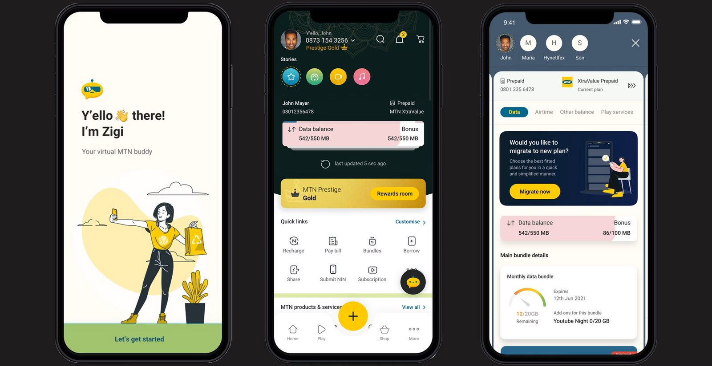
Understanding Essentials
We started by shadowing recharge behaviour in-store and at kiosks across Lagos and Johannesburg, then paired that with a review of support-ticket transcripts and app analytics to see where the digital journey broke down against the physical one. Contextual interviews with prepaid and postpaid customers helped separate genuine usability friction from one-off complaints, and a competitive teardown of regional telecom apps gave us a baseline for what "simple" should feel like in this category.
Focus areas
The questions the discovery phase had to answer:
- What are the current purchase trends in Nigeria?
- What is bought most often in Nigerian telco, prepaid or postpaid?
- Which payment method is used most?
- Who leads Nigerian e-commerce, and why?
- What counts as a strong NPS in this market?
- Who buys online, by age and gender?
- What is the most used lifestyle app in Nigeria?
- What words do customers actually use for bundles, recharge and VAS?
What customers told us
Competitive & Comparative Analysis
| Feature | My MTN | Telco A | Telco B | Telco C |
|---|---|---|---|---|
| One-tap recharge | ✓ | ✓ | ||
| Curated OTT hub | ✓ | ✓ | ||
| Biometric checkout | ✓ | |||
| Loyalty rewards visibility | ✓ | ✓ | ||
| In-app feedback capture | ✓ | ✓ |
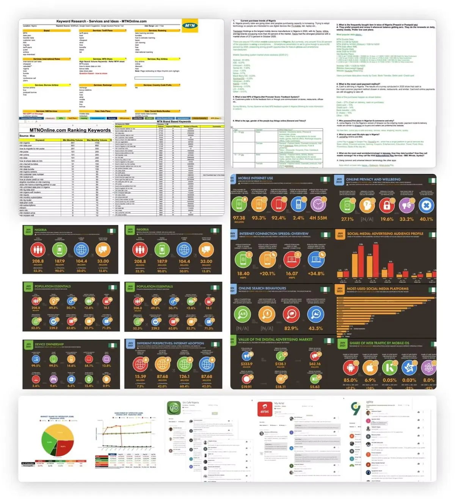
What we heard, in their words
Every participant response was synthesised into themes, opportunities and the tasks a persona needed to carry, their priorities, and their pain points.
"I just want to send airtime to my mother without going through five screens every single time."
"Half the time I don't even know which data plan is the good deal, the names all sound the same."
"When the OTP doesn't arrive I just give up and go to the kiosk downstairs."
Cooking up a better experience
Quick sketches got ideas onto paper first, to settle which elements each screen actually needed. A low-fidelity prototype followed, and went straight into user testing.
User flow, Quick Recharge
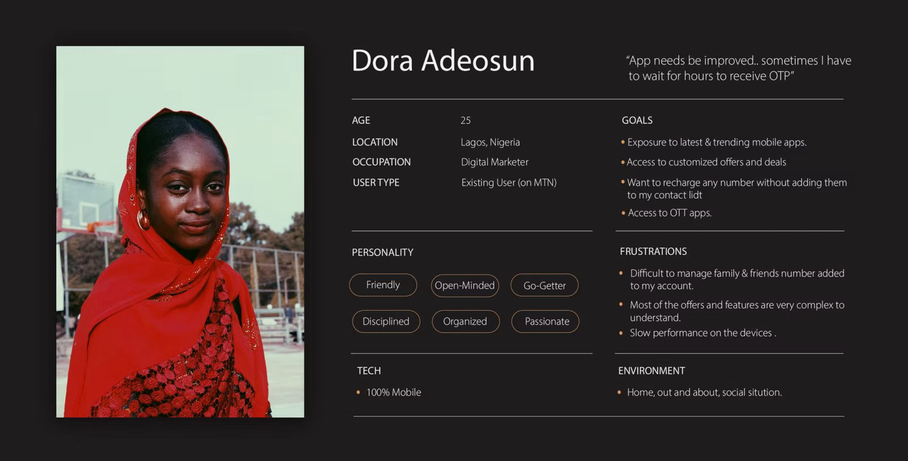
Wire frames
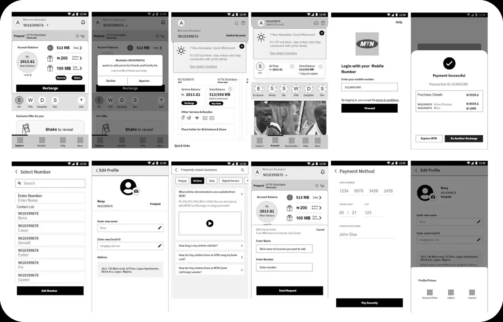
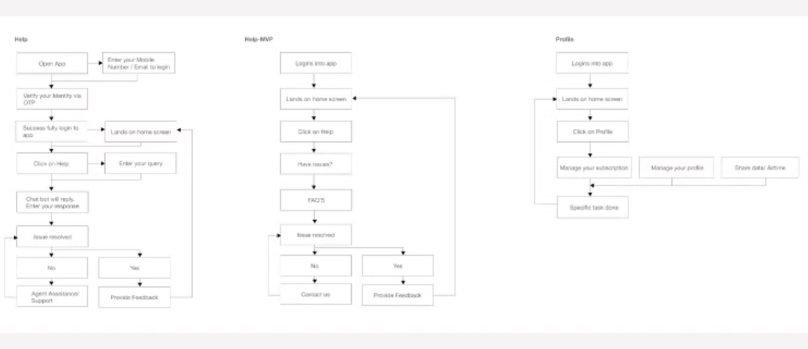
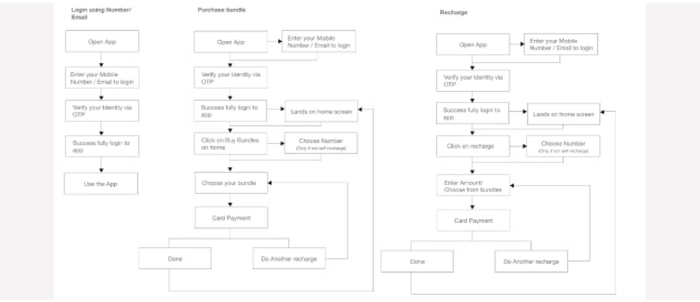
A focus on simplicity
Drawing on a colourful, warm Nigerian visual register but holding to minimal, functional simplicity, the UI answers what customers asked for: a clutter-free, curated look.
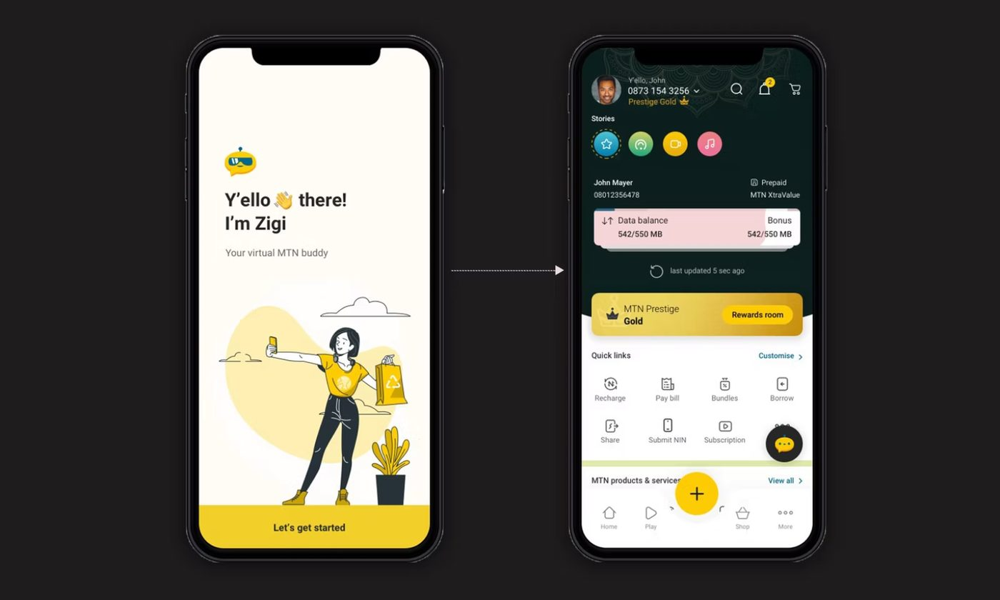
A highly curated experience
The app became MTN’s answer to connecting Nigerian users with the world and with each other. It links people to an easy top-up experience and to content matched to their own preferences, to the point that it now competes as a lifestyle choice rather than a utility.
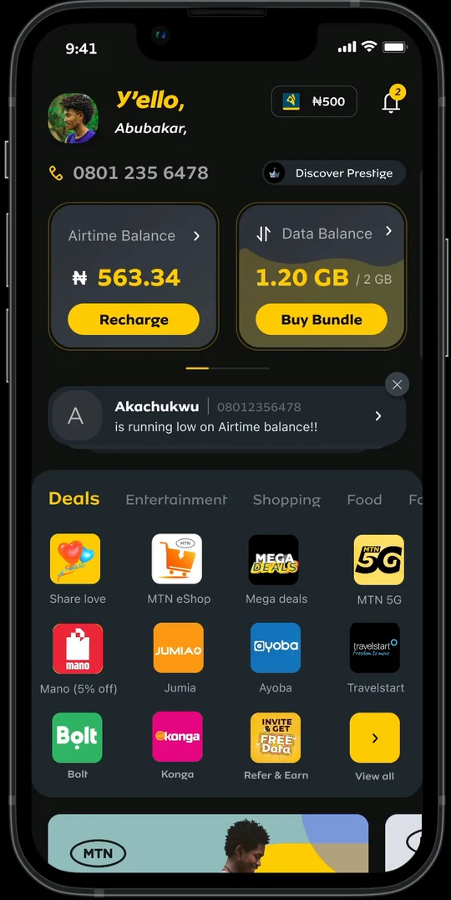
Five journeys, one tap from home
OTT Integration
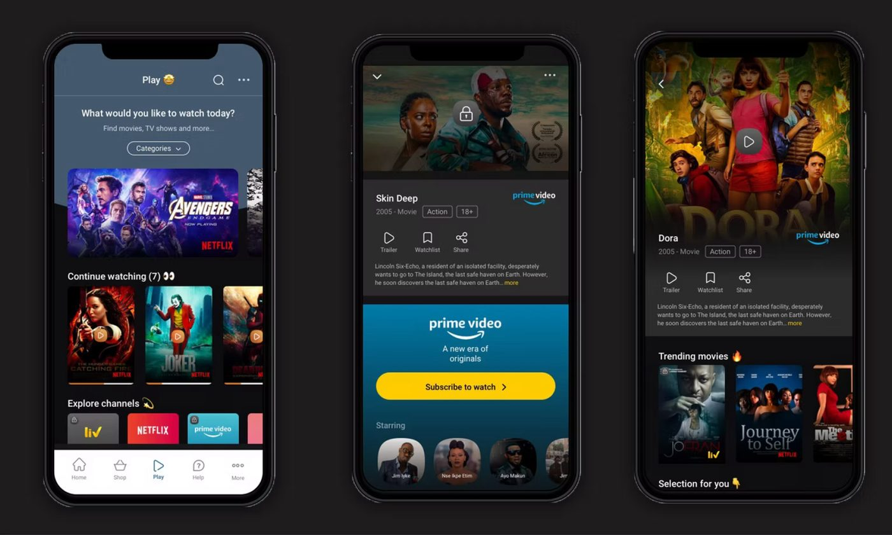
Plans & Offers
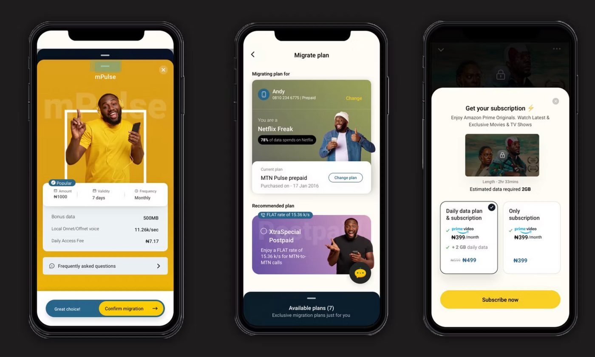
Recharge
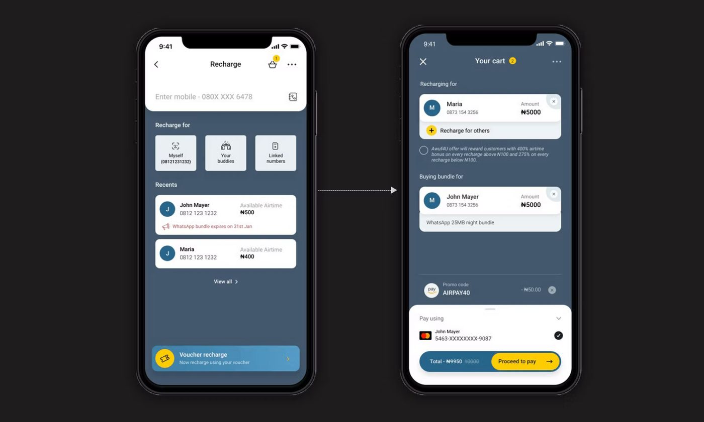
For loyal customers
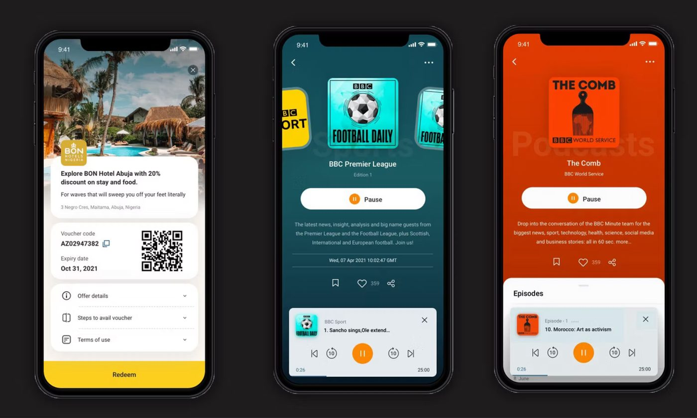
Feedback
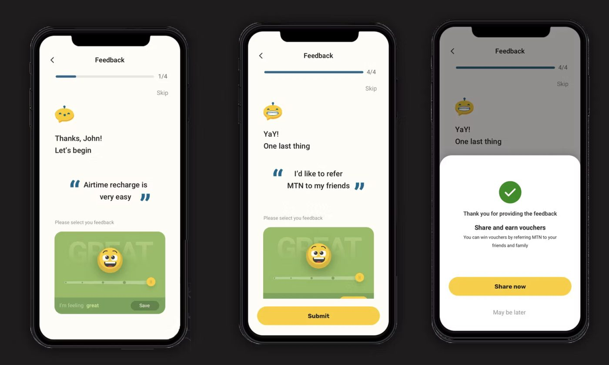
Fewer taps to the thing people opened the app to do.
Every change was validated against one metric: taps to complete the task a customer came for. The redesign answered each of the four things the survey said customers wanted.
- 5→1Screens to recharge a saved number, now a one-tap quick recharge. 76% had asked for exactly this.
- 1 in 3Customers who used to drop at OTP verification: that step now sits outside the recharge path.
- Up frontOffers and OTT bundles in one curated hub on home, which 91% of customers asked for.
What this project changed in how I work
-
01
The call centre is a usability report
Support call volume told us where the app failed faster than any lab session. I now ask for support ticket categories before I ask for analytics.
-
02
Security steps are design decisions
The OTP on every recharge was owned by risk, not design, so nobody had measured its drop-off. Bringing that number to the risk team is what moved it off the critical path.
-
03
Two markets are not one market
Nigeria and South Africa differ in data pricing, top-up habits and device mix. A single flow with local defaults worked better than two apps or one average.